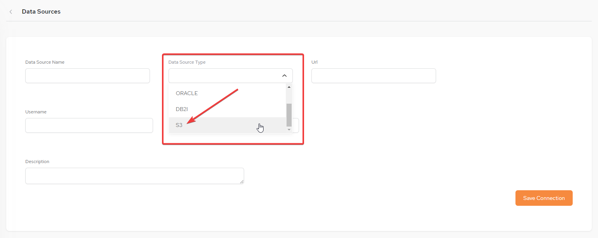
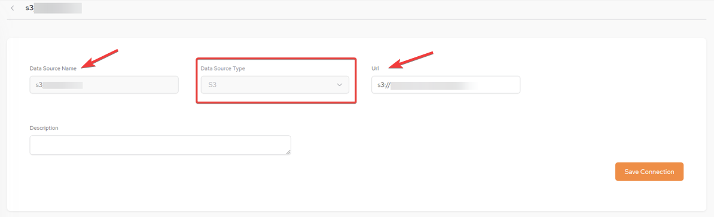
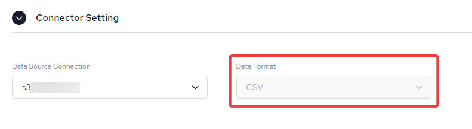

This feature is only available for our Smart DIH as-a-service customers only. For additional details, please contact our Customer Support Team.
Our SpaceDeck UI now offers a far simpler user journey using the new Express Upload option.
The advantages of this are exemplified by users having a quicker and simpler user experience by being fully self-service whilst using common standards of data migration to create data services.
This features supports the basic importing of data into GigaSpaces Smart DIH as-a-Service platform from standard data formats of .csv or .json files. This data can be imported from an Amazon S3 bucket. Using this data, through SpaceDeck, a Data Source can be defined as well as a Space, and a new Pipeline can be created and schemas/tables selected . After the data setup and configuration, queries can be run and services created.
To import data, perform the following steps:
In the Data Sources menu, select S3 as the Data Source Type.

Insert the Data Source Name and URL:

Click Save Connection.
When creating a new Pipeline, the Data Format will be displayed as CSV if that is the import file type:
